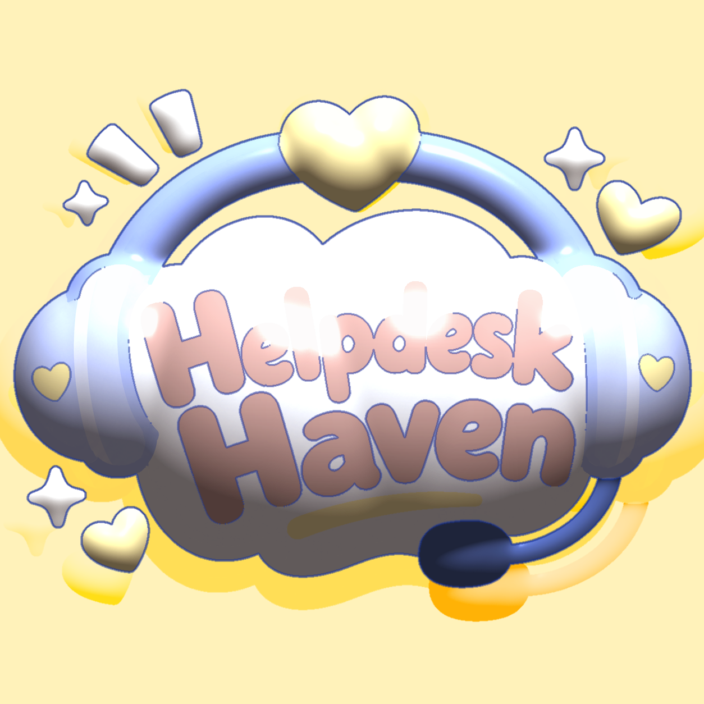
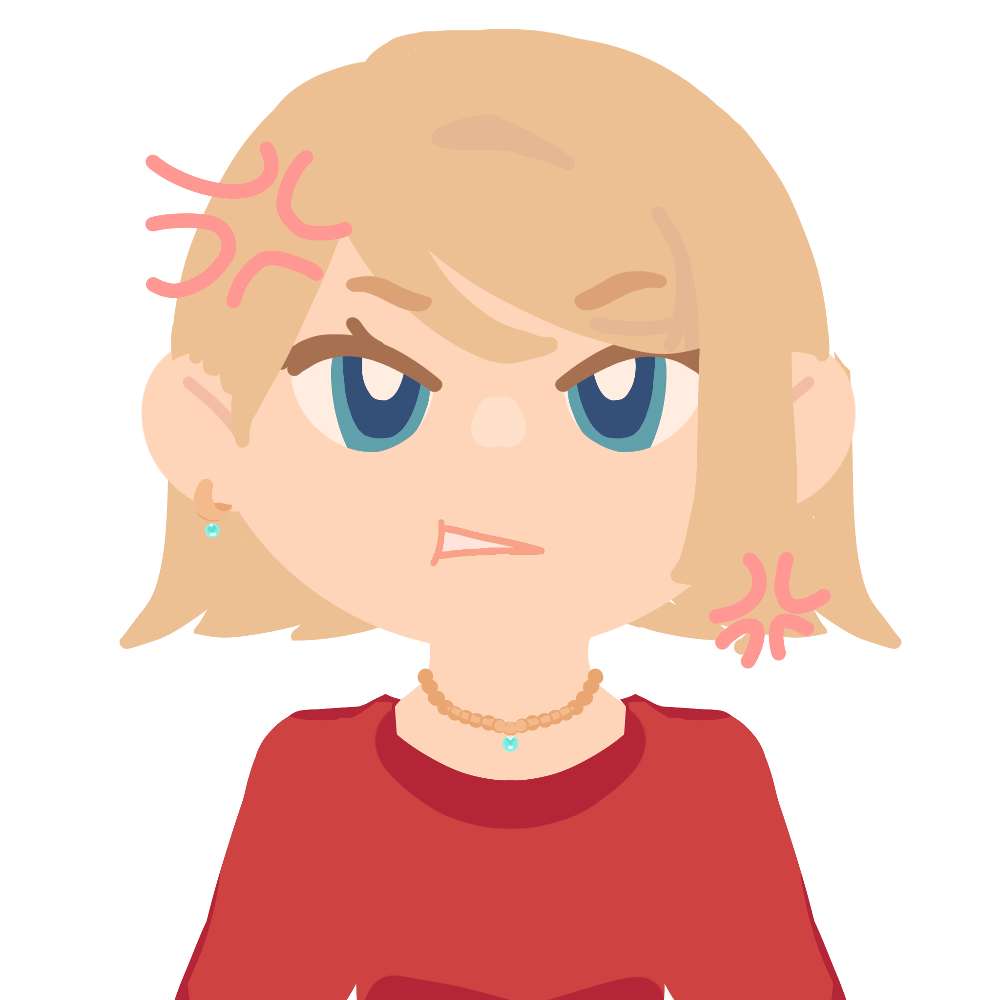

Maya
Patiently asks about a late, damaged delivery.

Website Motto: Be kind. Stay patient. Make every interaction count.
When helping a customer, take a breath, listen carefully, and respond with warmth. Small gestures of patience can turn a stressful moment into a great experience.
Patiently asks about a late, damaged delivery.

Frustrated by a possible duplicate charge.
Needs a calm, clear explanation of a confusing bill.
Empathetic, proactive, and follows through.
Steady, experienced, and practical.
Curious and happy to ask for guidance.
Careful and likes to double-check.
Quick tip: Choose the response that feels most like how you would handle the situation. Listen to the customer's concern, check the facts, and give clear next steps. Your choices build a style profile; they are not a test with one perfect personality.
← Back to Home